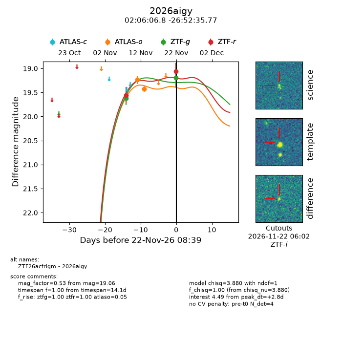
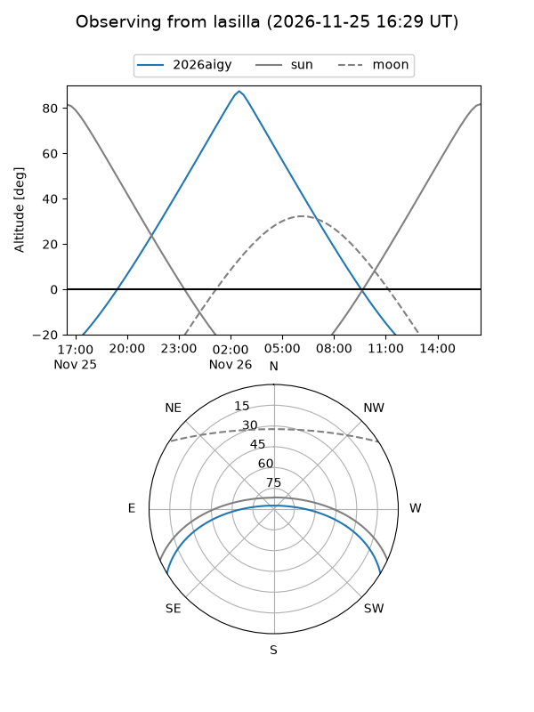
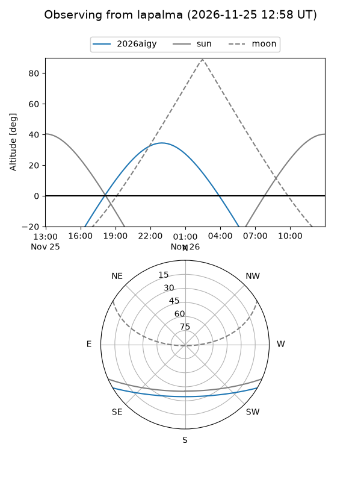
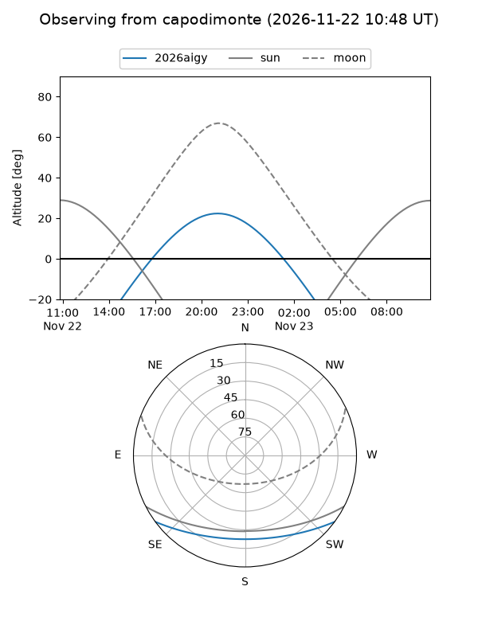
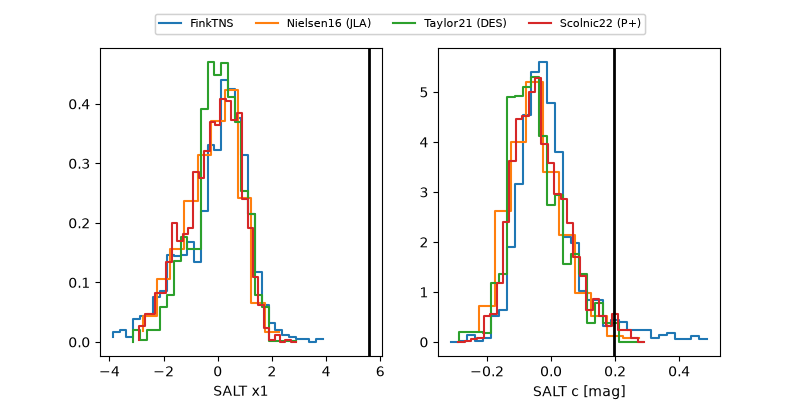

2026aigy
Target 2026aigy at 2026-11-22 08:40
Aliases and brokers:
FINK-ZTF: ztf.fink-portal.org/ZTF26acfrlgm
Lasair-ZTF: lasair-ztf.lsst.ac.uk/objects/ZTF26acfrlgm
ALeRCE-ZTF: alerce.online/object/ZTF26acfrlgm
YSE-PZ: ziggy.ucolick.org/yse/transient_detail/2026aigy
TNS name: wis-tns.org/object/2026aigy
Direct TNS query: direct search
alt names
ZTF26acfrlgm (ztf,fink_ztf)
2026aigy (tns,yse)
Coordinates:
equatorial (ra, dec) = 31.5282,-26.87660
equatorial (HMS+DMS) = 02:06:06.77,-26:52:35.77
galactic (l, b) = (216.3409,-73.37979)
Flags:
peak dt: +2.8
Photometry:
last atlaso=19.42, ztfg=19.19, ztfr=19.06
2 atlaso, 2 ztfg, 2 ztfr detections
Lightcurve

Visibility



Additional plots
